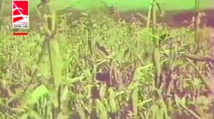

აბაშა 1970-იანებში: კაპიტალიზმი საბჭოთა ქალაქში?!
1970-იან წლებში, საბჭოთა ეკონომიკური მოდელის სიმკაცრის ფონზე, დასავლეთ საქართველოს პატარა ქალაქში, აბაშაში, ცალკეული პერიოდის განმავლობაში საოცარი ეკონომიკური მოვლენა განვითარდა — პრაქტიკაში გატარებული ექსპერიმენტი, რომელსაც შემდგომში „კაპიტალისტური სასწაული“ უწოდეს.
ექსპერიმენტის სათავე
1973 წელს აბაშის რაიკომის ახალ მდივნად გურამ მგელაძე დაინიშნა — იმ პერიოდში გაპარტახებულ რეგიონში ჩასულმა ადმინისტრატორმა გადაწყვიტა, ადგილობრივი სოფლის მეურნეობის პროდუქტიულობის გასაზრდელად, კოლმეურნეობის წესების გადახედვით ეცადა შედეგების მიღწევა. კერძოდ, მან გლეხებს მისცა უფლება, მოსავლის მნიშვნელოვანი ნაწილი სახელმწიფო შესყიდვამდე საკუთარ საჭიროებაზე დაეტოვებინათ.
მგელაძის მეუღლე, ნანა იოსელიანი იხსენებს, რომ ექსპერიმენტის იდეა საქართველოს მაშინდელ პირველ მდივან ედუარდ შევარდნაძეს წარუდგინეს, რომელმაც მას აქტიურად დაუჭირა მხარი. შეიქმნა სისტემა, სადაც სახელმწიფო მარტივად ყიდულობდა პროდუქციას პირდაპირ გლეხისგან და მაშინვე უხდიდა თანხას.
ეკონომიკური შედეგები
რეფორმამ აბაშაში მოულოდნელად სწრაფი წინსვლა გამოიწვია — სოფლებში სიმინდის ჭარბი მოსავალი აღირიცხა, ზოგიერთი გლეხი მიწიდან მიღებულ პროდუქტს ვეღარ ახერხებდა მთლიანად დაემუშავებინა. რაიონის სტატისტიკა მალევე გაუმჯობესდა, აბაშა ზედიზედ მეშვიდედ აიღებდა გარდამავალ დროშას და სხვა რაიონებიდანაც კი დაიწყეს იქ გადასახლება.
კიდევ უფრო მნიშვნელოვანია სოციალური ცვლილება: გლეხებისთვის შრომა გამართლდა, კავშირი გაჩნდა დაუფასებელ შრომასა და კონკრეტულ შედეგებს შორის, რასაც საბჭოთა ეკონომიკური მექანიზმები ხშირად ვერ უზრუნველყოფდა.
ისტორიული კონტექსტი
საბჭოთა სისტემაში მსგავსი მიდგომები უწინაც არსებობდა. საბჭოთა კავშირის კვლევის ლაბორატორიის წარმომადგენელი ირაკლი ხვადაგიანი განმარტავს, რომ 1920-იან წლებში, კოლექტივიზაციამდე, გლეხებს მიწის კერძო ნაკვეთები ჰქონდათ, ხოლო სახელმწიფო გადასახადებს ნატურით იღებდა. ამ პრაქტიკას შემდგომ ბერიამაც ხელი შეუწყო 1930-იან წლებში, განსაკუთრებით სუბტროპიკული კულტურების გაძლიერებით. მგელაძის ექსპერიმენტი, ფაქტობრივად, ამ მიდგომების რეაბილიტაციას წარმოადგენდა.
ექსპერიმენტის დასასრული
მიუხედავად თავდაპირველი წარმატებისა, ექსპერიმენტი ფართომასშტაბიან მოდელად ვერ ჩამოყალიბდა. გეგმის მიხედვით, მსგავს ინიციატივებს სხვა რეგიონებშიც უნდა გაეგრძელებინა თავი, თუმცა პოლიტიკური წინააღმდეგობები, ცენტრალური ხელმძღვანელობის ინერტულობა და ბიუროკრატიული ინტერესები ამის საშუალებას არ იძლეოდა. მგელაძის მცდელობა, იდეა მოსკოვში ბრეჟნევისთვის წარედგინა, უშედეგოდ დასრულდა.
ისტორიკოსი ხვადაგიანი აღნიშნავს, რომ ექსპერიმენტი იმ დროის პროცესის ნაწილია, როცა ედუარდ შევარდნაძე და მისი გუნდი მჟავანაძის კლანს ანაცვლებდა და ცდილობდა, ახალი სტრატეგიები საკუთარი წარმატების დასამტკიცებლად გამოეყენებინა. აბაშის მოდელი იქცა მახასიათებელ მაგალითად იმისა, თუ როგორ შეიძლება ლოკალურმა ინიციატივამ ეროვნული პოლიტიკის რადარზე გაჭირვებით მოიპოვოს ადგილი.